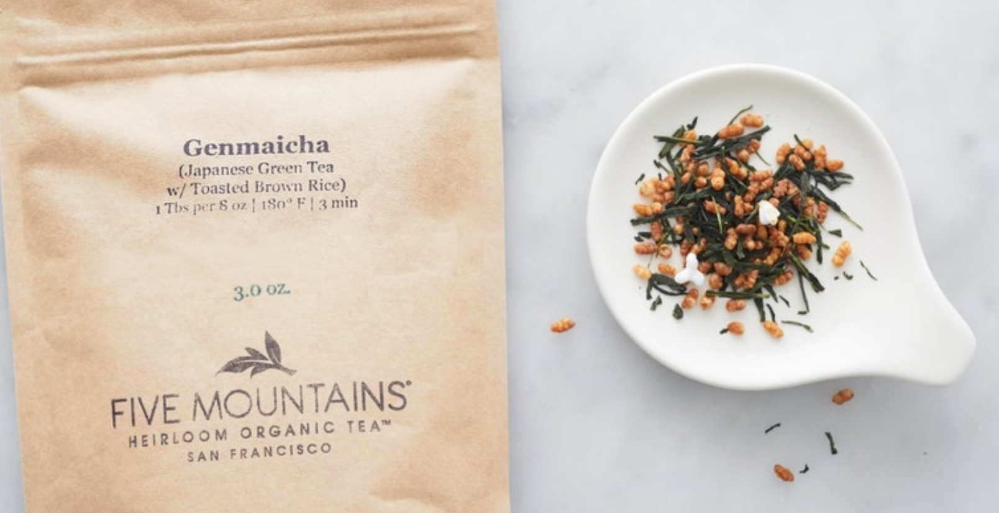

Blackberry Sage Tea

A black tea blend with notes of blackberry and sage. Not too caffeinated, nice on rainy mornings.

Lavender Earl Grey, with a little Almond Milk is my favorite in the morning!!
Hi my name is Abby
The tea that I suggest in Genmaicha!
Jasmine Tea

Jasmine Tea is the best for those who love flowers!!!
Peach Green Tea

To make a delicious Peach Green Tea:
- Bring water to a boil.
- Add in green tea bag(s) and steep for about 5 minutes.
- Let tea cool to room temperature or place into the refrigerator to chill.
- Peel and slice peaches.
- Place peach slices into a food processor and blend until pureed.
- Pour peach puree through a strainer.
- Add strained peaches and honey/simple syrup or any other sweetener(if you like) tea and stir to combine.
- Refrigerate and chill for at least 1 hour.
- Serve over ice and garnish with additional peach slices if desired.
Liver Detox Tea

Ingredients:
- Organic dandelion root 435 mg,
- Organic milk thistle seed 270 mg,
- Organic lemongrass weed 210 mg,
- Proprietary Blend 585 mg
- (Organic lemon peel,
- Organic peppermint leaf,
- Organic schisandra fruit,
- Organic ginger rhizome,
- Organic licorice root,
- Organic rose hip)
Meia's Fav Tea: Chocolate Strawberry

I found this tea from the Dollar Tea Club.
This herbal tea is shipped from Canada. I like it because it's like a hot cup of dessert. From the point that you add the tea to a cup, to right before you drink it, you'll experience a strong fragrance of chocolate covered strawberries.
The Ingredients:
- apple
- hibiscus
- rosehip
- strawberry
- papaya
- cocoa pieces
- cornflower petals
- natural flavors (organic compliant)

Honey Lavender
Personally I'm a fan of milk teas, but when having regular teas, but when I'm drinking regular tea, honey lavender is
a personal comfort favorite.
I'm not a fan of lavender , but this combination is perfect: a little sweet, a little refreshing, and very calming
overall.


Brie's Suggestion
Ginger Peach Red Tea
By Republic of Tea
I'm not a tea connoisseur, but this red tea was my childhood favorite for a long time. It's comforting, smells lovely, and good for an upset stomach.